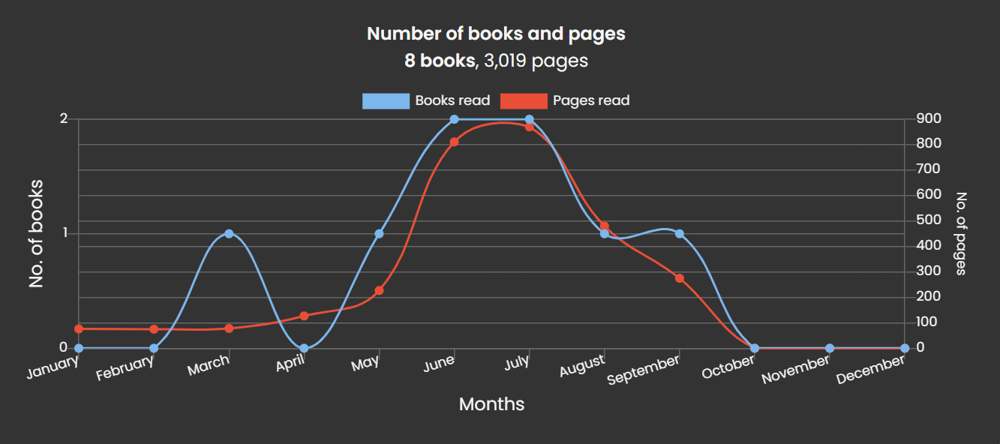

Reading has always been a love of mine, but one that waxes and wanes. I remember reading many series before the pandemic (Harry Potter, The Hunger Games, Skulduggery Pleasant, The 39 Clues, The Demon Road Trilogy, The Song of Ice and Fire, etc.). However, as schoolwork piled up I found myself reading less and less for my own amusement. I did read a little throughout university, but have really picked it back up since. I have kept track of my recent reading on The Storygraph, mainly for this graph:
I find the spike in June/July very funny. This was me procrastinating from writing my thesis and feeling desperate to read anything but math. Anyway, on this page are some books I particularly want to talk about, and then those that I have read recently.
I will justify these... sometime.
This book was my slow start to 2025, taking 3 months to finish
despite being about 200 pages long. (I always struggled to find time
to read during term-time). Sadly, I found it much less
blatantly homosexual provocative than I had
hoped for been warned: it was famously used as evidence when
he was put on trial for daring to be a homosexual in 1890's Dublin.
I have since learned that there are three versions of this book: the
original manuscript he sent to the magazine Lippincott's, the
heavily-edited edition they published in 1890, and the further
censored text Wilde eventually published as a book the next year.
The third, most watered-down version is what survives as the most
common one today, and is the one on my shelf. It was the previous,
far more provocative versions which were used as evidence in his
trial. I do recommend the book that I read, even as a thought
exercise on hedonism and deceit, though I wish to read his original
eventually!
After this I finally got around to reading `Meditations' by Marcus Aurelius, which has been on my reading list since before I started university! Oh well, better late than never. If you haven't heard of it, the book is a collection of private journals kept by the Roman Emperor as he was away on a war campaign. He would never return home, dying of a contagious disease, presumably the Antonine Plague. The journals were not written with the aim to be published, but were personal exercises in Stoicism. He has since become the face of this philosophy, and this book its bible. That is what makes the words so meaningful, I find. They were not written by some self-help coach attempting to separate you from your money, but by a man striving to lead a virtuous life despite having been thrust into the most powerful position on the continent — "Take care not to be Caesarified, or dyed in purple ... Strive hard to remain the same man that philosophy wished to make you.", as he wrote (to himself!) in Book 6.
This is a science-fiction trilogy which is being adapted by Netflix under the name 'The Three-Body Problem', the first season of which I really enjoyed. These books account for the June/July spike in my reading. Each book starts in the 'present-day' (somewhere in the 2010's) and follows a separate character through 'The Crisis', each going further into the future than the last. (The Netflix adaptation seems to cover the events chronologically, including the start of the second and third books.)
I won't talk much about the plot, all you need to know is that mankind comes into contact with a far more advanced alien civilisation from Alpha Centauri, which in the book is a chaotic trinary star system. This civilisation, the Trisolarians, has launched an invasion fleet on a 400 year journey to conquer Earth. Understandably, those who know are freaking out. I will comment more at the end, but this rendition of aliens is the best i have ever read, and most of the sci-fi is believable and enjoyable.
The second book gets a bit slow in the middle, but the last 100-150 pages contain one of the most entertaining sequences of events I have ever read. The Droplets! The Battle of Darkness!! So good!!! I would recommend the series solely for those chapters. The book does not finish on a cliff-hanger per se, but resolves the main conflict and leaves many questions unanswered / open to interpretation, to the extent that I believe it possible to not read the final book and be mostly satisfied.
The final book has similar strengths to the previous, but in my opinion is a slight disappointment by comparison for a reason I'll discuss later. It tries to tie together such a huge story, set far into the future, so introduces an unholy tree of technology. While some tech is introduced that leads to no plot development, those which are used to their full potential make up for it and the ratio of story-telling to science-fiction is still quite good. The sci-fi becomes harder to take seriously though. Spoiler: Space of a different dimension than 3, and more scarily, their weaponisation. That being said, the ending still made me cry, and the technology introduced has given me countless hours of thought and conversation, and I thoroughly enjoyed.
However, I felt there was one major weakness in the final book that I didn't notice in the other two. It suffered from a pitfall common to many such sci-fi epics: the characters are not properly developed. Every character lives and dies almost exactly the same as they were introduced. They do not have character arcs, only a sequence of events they live through. It is much harder to relate to a character who is stagnant and doesn't seem to work on their flaws, who is so shallow that they appear two-dimensional. This left a very dry taste in my mouth, so to speak. It left me craving a book where I could relate to a character as a fellow flawed human. Fortunately, I had some George Orwell unread on my shelf...
One thing I have huge respect for is the description of the aliens. Most popular portrayals echo the antiquated belief that we were made in God's image: 'any intelligent species must look humanoid'. Liu avoids this by giving essentially zero physical description of the aliens, apart from two pieces of information necessary for the plot. First, they are able to dehydrate their bodies (reminiscent of tardigrades) to survive extinction in the times where their planet is flung too far from, or comes too close to, one of their suns. This dangerous situation is why they are planning on conquering the Earth. Second, their thoughts show up as flashes of light on their skin. Thus, they have no distinction between 'to think' and 'to say', and no concept of deceit or lies. This is one way of avoiding the awkward question of 'Why did the villain reveal his plan prematurely?', by designing the aliens to not realise that communication with the Earth was a strategic mistake.
Also, much of the science fiction, especially in the first two books, is actually not terrible, leading to some very interesting stories without making my inner physicist cringe. Oh my god the droplets were so good!!! With the exception of the sophons: faster-than-light communication through quantum entanglement. Yuck. But the story is what it is because it allows for communication between the civilisations, so it is a necessary evil. As I said, the third book is a bit further out...
I had read both '1984' and 'Animal Farm' a few years ago (on the recommendation of a friend at the time, for which I will always be grateful), and I had bought them as a set of 6 of Orwell's books. After finishing the sci-fi trilogy above, which as I said made me want to read a story as much about a character as the unfair world they inhabit, this is where I turned.
Over late July and early August, I read both 'Keep the Aspidistra Flying' and 'A Clergyman's Daughter'. These are very similar books, following flawed characters as they navigate life on the brink of homelessness in an even-more-flawed London. They are very well-written, presumably because such was Orwell's own life at the time. The two situations were slightly different though: the first character got there through his own self-destructive tendencies, the second through sheer misfortune (of being poor and a woman).
I would not recommend these as much as '1984' and 'Animal Farm', but they were easy to digest and I enjoyed them.
This is the memoir of Christopher Hitchens (1949-2011), a Britich-American journalist and writer. I know him mainly as one of the 'Four Horsemen' of New Atheism, along with Dawkins, Dennett, and Harris. This is actually not too relevant to the autobiography, so I will comment on that elsewhere. I won't talk much about who he was, but here are a few reasons why I really enjoyed the book. Firstly, it was a great experience, to learn more reasons to respect someone I already held in high regard. For example, he was active in far more arenas of politics than I had known, being quite the socialist, and extremely anti-war when he was younger.
Secondly, this is the only 'memoir' I have ever read; any other autobiographical work I have read are by much younger people with decades to look forward to. It is quite something to step inside the mind of someone who knows they have lived most of their life, and is seeing their peers in the obituaries. Hitchens would die the next year of oesophageal cancer, not yet detected at the time of publication. During his treatment, he started writing a sequel, 'Mortality', which ends abruptly with a sketch of another chapter, and an afterword by his wife (which has succeeded in making me cry every damn time I open the page). Death of the kind seen coming (terminal illness, suicide, self-sacrifice) is something that always makes me emotional. On a completely unrelated note, I am reminded to rewatch 'Only the Brave', based on a harrowing true story.
And the final, most impactful reason is this. He came of university age in the late 1960's. Throughout his youth, the rhetoric on international war was the condemnation of what had happened twice in a lifetime, the strong urging for countries to co-operate and live peacefully and so on. Then, as he entered university in the 1960's, there were 500,000 American military personnel in Vietnam, and 100,000 Warsaw Pact military personnel in Czechoslovakia... What a load of shite all that talk had turned out to be! (I wonder what that must feel like... I don't think there is need to explain the parallels to the world we find ourselves in now.) He speaks briefly on the anger that arose from the sudden realisations that the decades-long anti-war talk was meaningless, that the government of your great nation was complicit in atrocities overseas, and that the horrors previous generations witnessed were happening again. To see, written down, the anger of someone going through what we are was eye-opening, though it probably shouldn't have been. How naive we are to believe the world has changed.